Case study / In progress
HelloRDMC: helping researchers find the right data service
I interviewed UNC researchers, turned what they said into personas and design priorities, and designed the dashboard and help flow for a new portal.
- Role
- UX researcher and designer
- Team
- Six fellows. I work most with front-end developers and the Education and Outreach team.
- Timeline
- August 2026 to present
- Methods
- Interviews, synthesis, personas, wireframes, accessibility audit
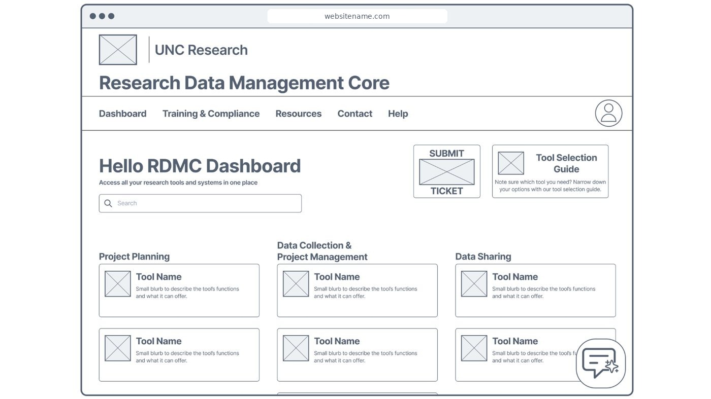
StatusThe front end is still being built and the designs haven’t been tested with users, so there are no results yet. Participant roles are generalized.
Problem
The Research Data Management Core (RDMC) offers tools and services for planning, collecting, managing, and sharing research data. Researchers told us the support was good. They struggled to find it and to know which tool to use.
My design goal: make tools and ticket submission highly visible, and make the chat assistant, contact info, tool selection guide, help, and ticket submission easy to find.
Research
I ran five discovery interviews with UNC research staff in coordination and management roles. Four were analyzed; my supervisor directed that one be left out. After each interview I debriefed with my supervisor to pull out themes, then reread the transcripts on my own.
LimitFour participants shows common problems, not how many researchers share them.
Findings
- Visibility. Researchers don’t know what RDMC offers. Many heard about it from colleagues.
- Choosing tools. They know their goal but not which tool fits their project, such as REDCap@UNC versus Veeva SiteVault.
- Support. They want templates, examples, FAQs, and quick answers. They praised RDMC staff and rely on them.
The takeaway: the issue isn’t the quality of the service. It’s helping researchers find, understand, and use it.
Three personas
I wrote three personas from the interviews: the Data Steward, the Research Operations Navigator, and the Technical Service Integrator. Quotes are verbatim and names are fictional. They split on one point:
- The Data Steward prefers expert humans over automation.
- The Navigator wants self-service for simple questions and a person for complex ones.
- The Technical Service Integrator is most open to AI help and wants strong search.
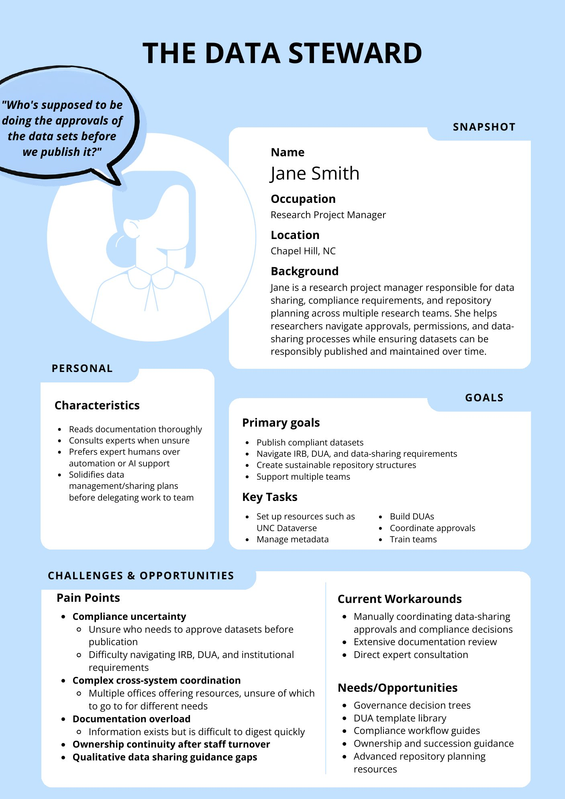
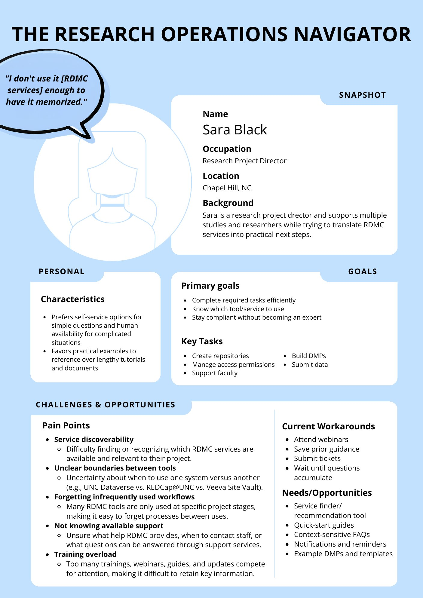
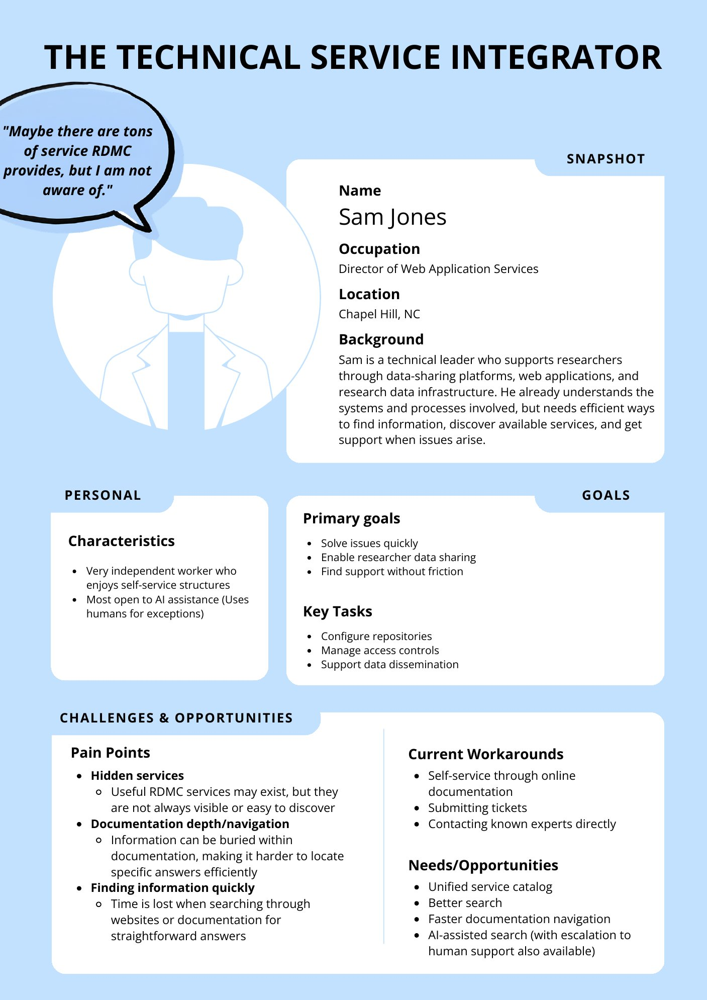
Priorities
I turned the findings into six design opportunities.
| Priority | Opportunity |
|---|---|
| High | Increase RDMC visibility |
| High | Improve service discovery |
| High | Clarify tool selection |
| High | Simplify guidance |
| Medium | Stronger support pathways |
| Medium | Lifecycle communications |
The two Medium items fit the Education and Outreach team better than the design team, so I passed those findings to them.
Design
I started by hand. Before opening Figma, I sketched the dashboard and its help states on paper, using paper cut-outs for the profile menu and the chat panels.
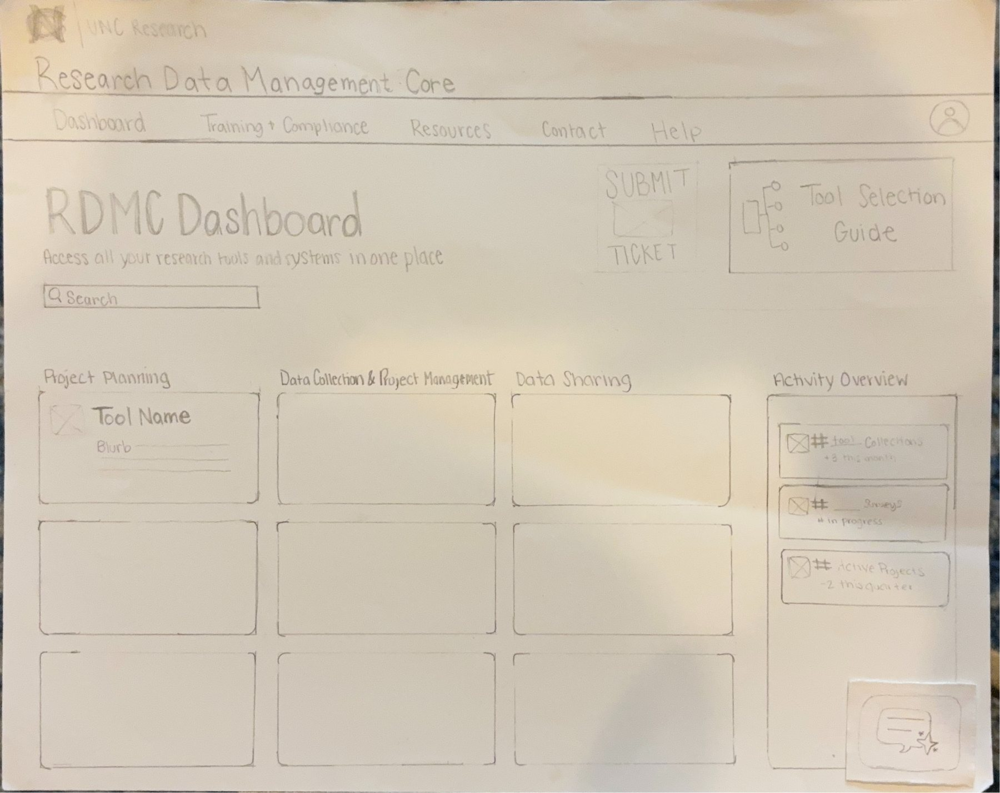
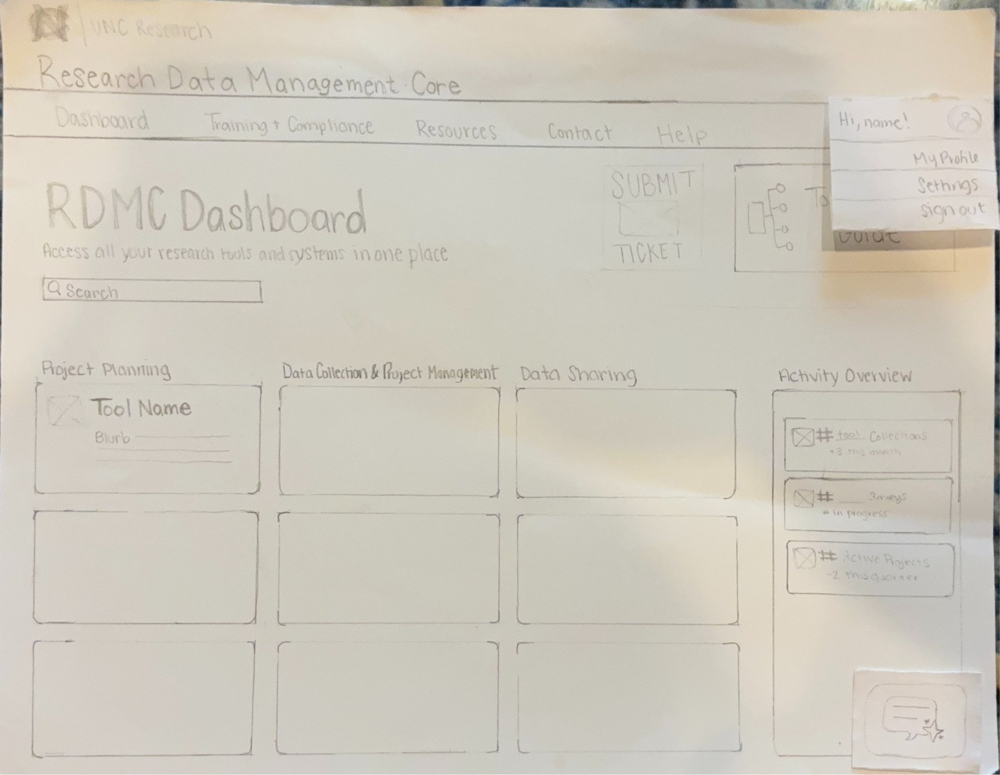
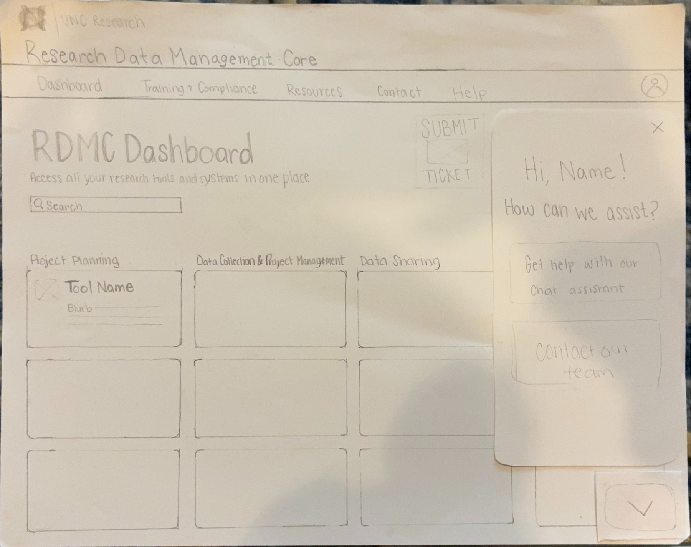
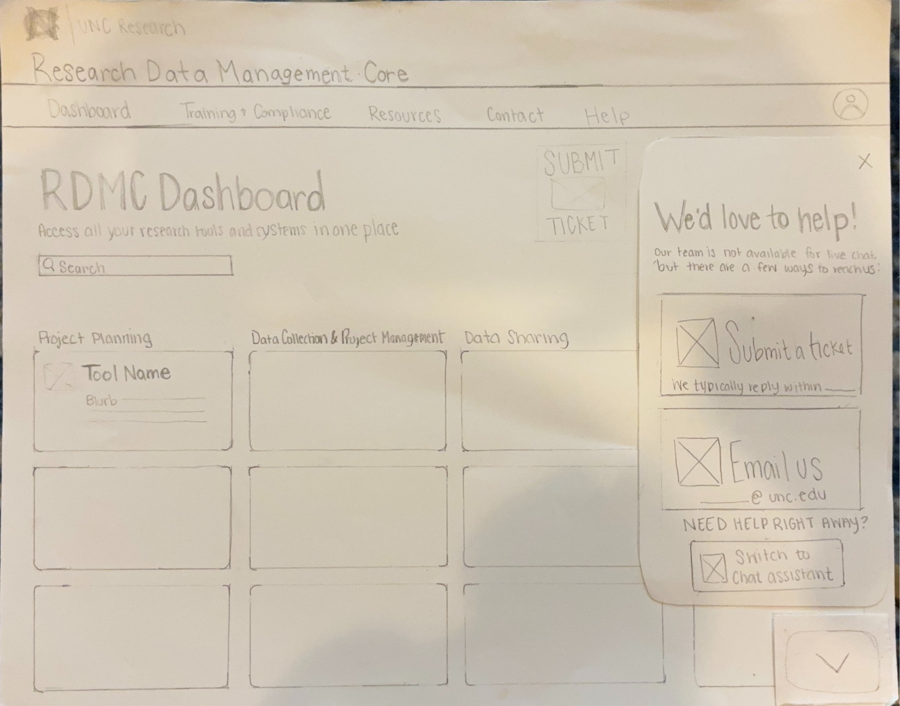
Then I moved to Figma. Tools are grouped by stage of a research project, with Submit Ticket and a Tool Selection Guide up front, plus search and a chat assistant button.
Help flow
Researchers split on wanting a person or a bot, so the chat assistant’s first screen offers both. It opens with “Hi, Name! How can we assist?” Users can contact the team or use the chat assistant. The contact panel explains there is no live chat and offers a ticket, email, or a switch to the assistant.
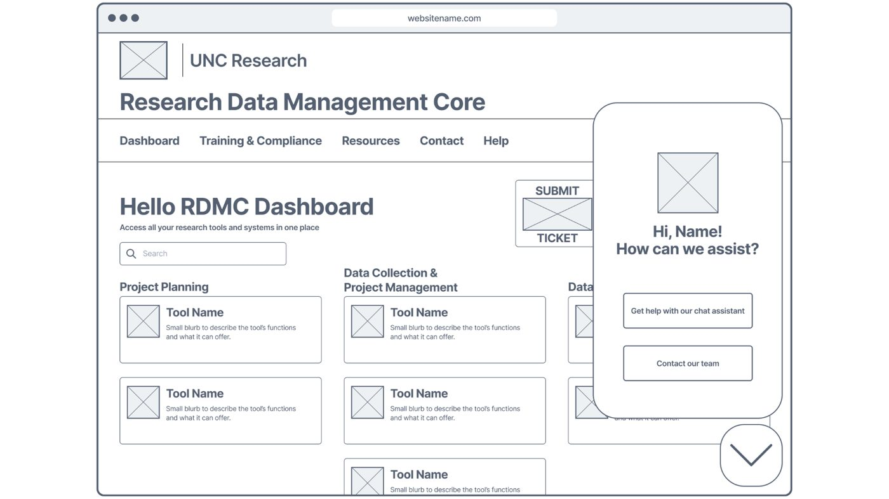
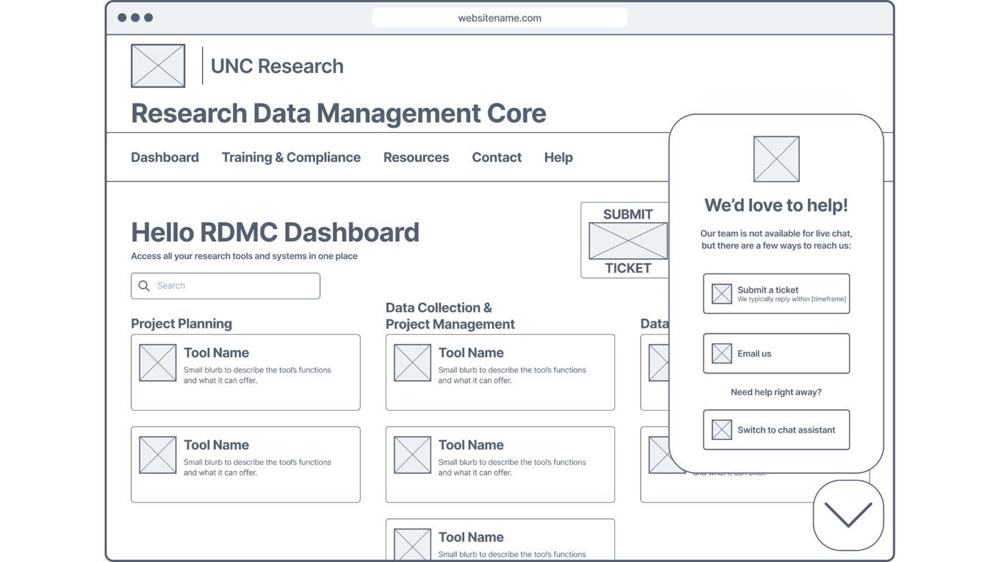
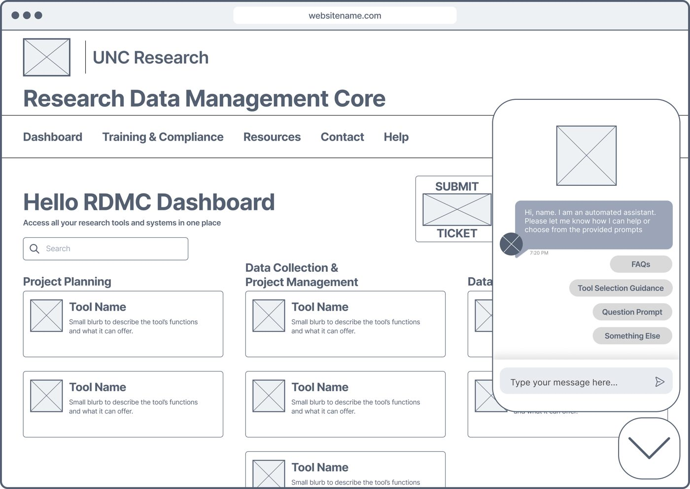
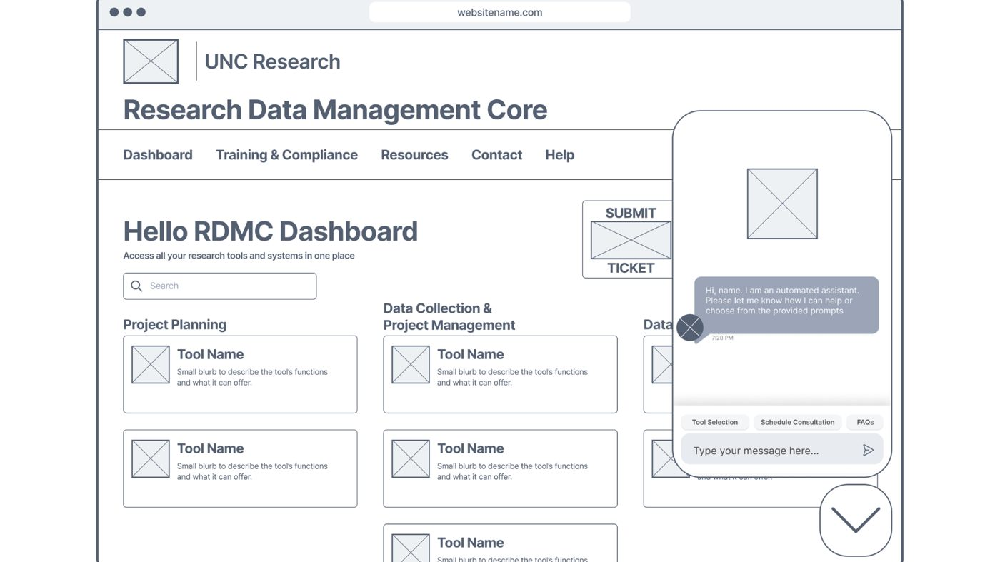
I designed two chat windows for the team to review. Their feedback is still to come.
How the screens connect
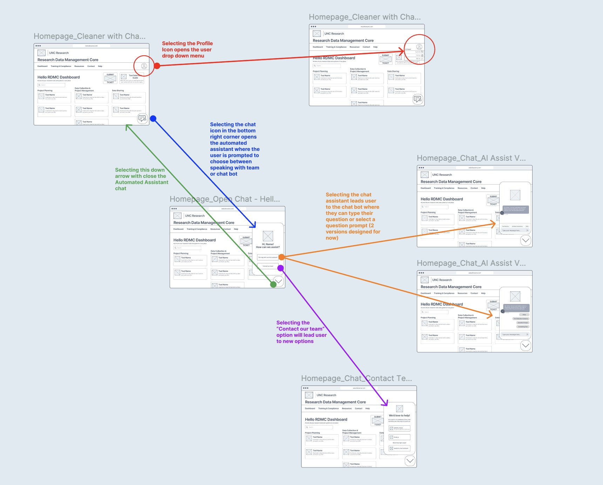
Accessibility audit
Separately, to align with WCAG 2.2, which UNC requires, I audited four pages of the existing admin site with WAVE and manual keyboard testing, and documented 10 issues with code and annotated screenshots. These findings haven’t shaped the new designs yet.
Next
- Get team feedback on the two chat windows.
- Continue the high-fidelity design as the front end is built.
- Design the system flow and interface for a tool finder wizard that helps researchers choose the right tool or system.
- Test with researchers and revise, checking each change against the original interview pain points.
- Map the researcher journey from needing a service to getting help.